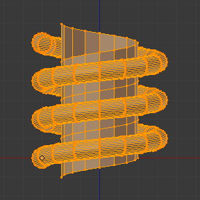
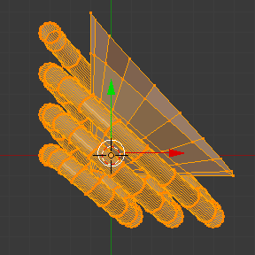
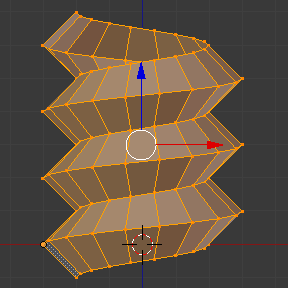
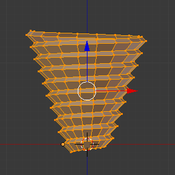

Інструмент «Гвинт» -- Screw Tool¶
Орієнтир -- Reference
| Mode: | Edit Mode |
|---|---|
| Panel: |
Інструмент Screw комбінує повторюваний обкрут Spin з пересуванням для генерування гвинтоподібного або спіралеподібного об'єкта. Використовуйте цей засіб для створення гвинтів, пружин або оболонко-подібних структур (морських мушлів, ніжок шурупів, спеціальних профілів тощо).
Головна відмінність між Screw Tool та Screw Modifier є те, що Інструмент «Гвинт» може розраховувати кутові прогресії, використовуючи базовий кут профілю автоматично. Він може також коригувати кутовий вектор Осі без використання другого модифікатора (наприклад, використання модифікатора Screw з модифікаторами Bevel, Curve тощо), що дає більш чистий підхід для розподілення вершин та використання.
Цей інструмент працює, використовуючи відкриті або закриті профілі, а також профілі, закриті гранями. Ви можете використовувати профілі як частину з відкритими ребрами, тобто частину повного шматка, а також закрите коло або напів-переріз сфери, які також закривають кінець профілю.
Ви можете бачити деякі приклади сітей, генерованих за допомогою інструмента Screw на Ілюстрації Верхівка шурупа, зроблена з допомогою інструмента Screw. та Ілюстрації Пружина, зроблена за допомогою інструмента Screw..

Верхівка шурупа, зроблена з допомогою інструмента Screw. |

Пружина, зроблена за допомогою інструмента Screw. |
Використання¶
Цей інструмент працює тільки із Сітями. У режимі правки Edit Mode кнопка операції засобу Screw розміщена на панелі «Інструменти Сітей» -- Mesh Tools тут -- «Полиця Інструментів > Інструменти Сітей > Додання: Гвинт» -- . Для використання цього інструмента вам необхідно створити принаймні один відкритий профіль або лінію, що буде використовуватися як вектор для висоти, кутовий вектор та для задання напрямку для Blender'а.
The Screw tool uses two points given by the open line to create an initial vector to calculate the height and basic angle of the translation vector that is added to the "Spin" for each full rotation (see examples below). If the vector is created with only two vertices at the same XYZ location (which will not give Blender a vector value for height), this will create a normal "Spin".
Having at least one vector line, you can add other closed support profiles that will follow this vector during the extrusions (See Limitations). The direction of the extrusions is calculated by two determinant factors, the point of view in Global Space and the position of the cursor in the 3D View using Global coordinates. The profile and the vector must be fully selected in Edit Mode before you click the Screw Button (see Limitations). When you have the vector for the open profile and the other closed profiles selected, click the Screw Button.
Обмеження¶
There are strict conditions about the profile selection when you want to use this tool.
You must have at least one open line or open profile,
giving Blender the starting Vector for extrusion,
angular vector and height (e.g. a simple edge, a half circle, etc.).
You need only to ensure that at least one reference line has two "free" ends.
If two open Lines are given, Blender will not determine which of them is the vector,
and will then show you an error message,
"You have to select a string of connected vertices too".
You need to select all of the profile vertices that will participate in the Screw
Tool operation; if they are not properly selected,
Blender will also show you the same message.
Зауважте, що відкрита лінія завжди видавлюється, а тому якщо ви використовуєте її тільки для «направлення»гвинта, то ви маєте видалити її після завершення роботи інструмента (скористайтеся виділенням пов'язаного, Ctrl-L, для виділу усього видавлення цієї відкритої лінії).
Якщо є будь-яка проблема з виділенням або профілями, то інструмент попередить вас повідомленням про помилку: "You have to select a string of connected vertices too" як показано на Ілюстрації Повідомлення про помилку від інструмента Screw у заголовку редактора Info. та Ілюстрації Повідомлення про помилку при клацку на кнопці Screw при неправильному або поганому виділенні., в редакторі Info Editor та у місці, де ви клацнули стартувати здійснення цієї операції (коли ви клацаєте на кнопці Screw).

Повідомлення про помилку від інструмента Screw у заголовку редактора Info.

Повідомлення про помилку при клацку на кнопці Screw при неправильному або поганому виділенні.
You may have as many profiles as you like (like circles, squares, and so on) -- Note that, not all vertices in a profile need to be in the same plane, even if this is the most common case. You may also have other, more complex, selected closed islands, but they have to be closed profiles because Blender will seek for only one open profile for the translation, height and angular vector. Some closed meshes that overlap themselves may not screw correctly (for example: Half UV Sphere works fine, but more than half could cause the Screw Tool to have wrong behavior or errors), and profiles that are closed with faces (like a cone or half sphere) will be closed automatically at their ends, like if you were extruding a region.
Mẹo
Simple Way to not Result in Error
Тільки один Відкритий профіль, усі інші можуть бути закритими, уникайте об'ємів та деяких профілів, закритих гранями...
Опції¶
Цей інструмент є інтерактивним та модальним засобом, що працює тільки у режимі Edit Mode.
Після того, як ви клацнули на кнопці Screw на панелі Mesh Tools, Blender переходить в інтерактивний режим засобу Гвинт, а панель оператора внизу Полиці Інструментів буде замінена, щоб ви могли коригувати значення, пояснені нижче. Для показу панелі «Інструменти Сітей» використовуйте скорочення T у режимі Edit Mode редактора 3D Огляду.
Після здійснення вами будь-якої іншої операції Blender покине інтерактивний режим та прийме усі ці значення. Оскільки цей засіб є модальним, ви не можете повернутися в інтерактивний режим після завершення/залишення операції або зміни з режиму Edit Mode на Object Mode. Якщо ви хочете перезапустити операцію спочатку, ви можете натиснути Ctrl-Z у будь-який час у режимі Edit Mode.
The basic location of the cursor at the point of view (using Global coordinates) will determine around which axis the selection is extruded and spun at first (See Fig. Properties region ‣ Cursor.). Blender will copy the cursor location coordinates to the values present in the Center values of the Screw interactive Panel. Depending on the Global View position, Blender will automatically add a value of 1 to one of the Axis Vectors, giving the profiles a starting direction for the Screw Operation and also giving a direction for the extrusions. (See examples below).
Позиція 3D курсора буде стартовим центром обертання. Наступні операції (наприклад, при клацку на кнопці Screw знову) будуть починатися з останнього виділеного елемента. Продовжувані операції без зміни виділення будуть повторювати операцію продовжувано з останньої точки.
.

Панель оператора інструмента Screw (режим Edit Mode).
- Центр -- Center
- These number buttons specify the center of the spin. When the tool is called for the first time, it will copy the XYZ location (Global Coordinates) of the cursor presently in the 3D View to start the operation. You can specify the cursor coordinates using the Transform Panel in 3D View, using shortcut T to toggle the Panel, and typing in the 3D Cursor Location coordinates. You can adjust these coordinates interactively and specify another place for the spin center during the interactive session. (See Fig. Панель оператора інструмента Screw (режим Edit Mode).).
- Кроки -- Steps
- Ця кнопка з числом визначаються, скільки видавлень буде зроблено для кожного обороту на 360 градусів. Ці кроки рівномірно розподіляються шляхом ділення їх кількості на 360 градусів. Мінімальне значення 3; максимальне -- 256 (Дивіться Ілюстрацію Панель оператора інструмента Screw (режим Edit Mode).).
- Обороти -- Turns
- Ця числова кнопка визначає, скільки повинно бути виконано оборотів. Blender буде додавати новий повний оборот на 360 градусів для кожного вказаного тут прирістного числа. Мінімальне значення 1; максимальне -- 256. (Дивіться Ілюстрацію Панель оператора інструмента Screw (режим Edit Mode).).
- Вісь -- Axis
- These three numeric fields vary from (-1.0 to 1.0) and are clamped above those limits. These values correspond to angular vectors from (-90 to 90) degrees. Depending on the position where you started your cursor location and Object operation in the viewport and its axis positions in Global View space and coordinates, Blender will give the proper Axis vector a value of 1, giving the angular vector of the profile a starting direction and giving the extrusions a starting direction based on the current view. Blender will let you adjust the axis angular vectors and you can tweak your object such that you can revert the direction of the screw operation (by reverting the angular vector of the height), meaning you can revert the clockwise and counterclockwise direction of some operations, and also adjust the angular vectors of the profile, bending it accordingly. (See Fig. Панель оператора інструмента Screw (режим Edit Mode).).
Приклади¶
Приклад пружини¶

Коло розміщене у X (-3, 0, 0).
- Відкрийте Blender та видаліть стандартний Куб.
- Змініть з перспективного на ортогональний огляд за допомогою Numpad5.
- Change the view from User Orthographic to Front Orthographic, using the shortcut Numpad1. You will see the X (red) and Z (blue) coordinate lines.
- In case you have moved the cursor by clicking anywhere in the screen, again place the cursor at the Center, using the shortcut Shift-S choosing Cursor to Center or the Transform Panel, placing the cursor at (0, 0, 0) typing directly into the Cursor 3D Location.
- Додайте коло, скориставшись Shift-A .
- Оберніть це коло за допомогою R X 9 0 та Return.
- Застосуйте обертання (Apply: Rotation) з Ctrl-A та вибравши Rotation
- Grab and move this circle three Blender Units on the X axis to the left;
you can use the shortcut Ctrl while grabbing with the mouse using the standard transform widgets
(clicking on the red arrow shown with the object and grabbing while using shortcut Ctrl
until the info in the bottom left corner of the 3D View editor displays
D. -3.0000 (3.0000) Global), or press the shortcut G X Minus 3 and Return. You can use the Transform Panel, and type Minus 3 and Return in the Location too. (See the Fig. Коло розміщене у X (-3, 0, 0).). - You will have to scale the circle using the shortcut S Period 5, then Return.
- Далі, перейдіть у режим правки Edit Mode, скориставшись Tab.
- Зневиділіть (зніміть виділ з) усі вершини за допомогою A.
The following steps explain how to create a height vector:
Профіль та вектор створено.
- Press Ctrl and left-click LMB near the circle, in more or less at the light gray line of the square above the circle, and, while still pressing Ctrl, left-click LMB again in the gray line below the circle. You have created two vertices and an Edge, which Blender will use as the first height and angle vector.
- Now, in the Transform Panel, in the median, clicking in the Global coordinates, for the XYZ coordinates, put (-2, 0, -1).
- RMB click on the other vertex, and again, set its XYZ coordinates to (-2, 0, 1). This will create a straight vertical line with 2 Blender units of Height.
- Зневиділіть та виділіть все знову за допомогою A. (Дивіться Ілюстрацію Профіль та вектор створено.).
- Again, place again the cursor at the center. (Repeat step 2).
- At this point, you can save this blend-file to recycle the Spring for another exercise; LMB click on File, located in the header of the Info editor, (at the top left side), and choose Save as. You can name it e.g. "screw spring example.blend".
- Click Screw and adjust the Steps and Turns as you like and you have a nice spring, but now here comes the interesting part!
Обкручування за і проти годинникової стрілки для прикладу з пружиною¶
Still in the interactive session of the Screw Tool, you will see that the Z axis Value of the Screw Panel is set to 1.000. LMB click in the middle of the Value and set this value to -1.000. At first, the Spring was being constructed in a Counterclockwise direction, and you reverted the operation 180 degrees in the Z axis. This is because you have changed the angular vector of the height you have given to Blender to the opposite direction (remember, -90 to 90 = 180 degrees ?). See Fig. Напрямок пружини..

Напрям проти годинникової стрілки. |
Перевернуто на напрям за годинниковою стрілкою. |
It is also important to note that this vector is related to the same height vector axis used for the extrusion and you have created a parallel line with the Z axis, so, the sensibility of this vector is in practical sense reactive only to negative and positive values because it is aligned with the extrusion axis. Blender will clamp the positive and negative to its maximum values to make the extrusion follow a direction, even if the profile starts reverted. The same rule applies to other Global axes when creating the Object for the Screw Tool; this means if you create your Object using the Top View (Shortcut Numpad7) with a straight parallel line following another axis (for the Top View, the Y axis), the vector that gives the height for extrusion will also change abruptly from negative to positive and vice versa to give the extrusion a direction, and you will have to tweak the corresponding Axis accordingly to achieve the Clockwise and Counterclockwise effect.
Ghi chú
Vectors that are not Parallel with Blender Axis
The high sensibility for the vector does not apply to vectors that give the Screw Tool a starting angle (e.g. any non-parallel vector), meaning Blender will not need to clamp the values to stabilize a direction for the extrusion, as the inclination of the vector will be clear for Blender and you will have the full degree of freedom to change the vectors. This example is important because it only changes the direction of the profile without the tilt and/or bending effect, as there is only one direction for the extrusion, parallel to one of the Blender Axes.
Згинання профілів для прикладу з пружиною¶
Still using the spring example, you can change the remaining vector for the angles that are not related to the extrusion axis of the spring. Bending the spring with the remaining vectors and creating a profile that will also open and/or close because of the change in starting angular vector values. What really is changed is the starting angle of the profile prior to the extrusions. It means that Blender will connect each of the circles inclined with the vector you have given. The images below show two bent Meshes using the axis vectors and the spring example. See Fig. Bended mesh.. These two Meshes generated with the Screw tool were created using the Top Orthographic View.

Вісь задасть профілю стартовий кут вектора. |

Кут вектора підтримується уздовж видавлень. |
Створення ідеальних стрижнів гвинтів¶
Using the spring example, it is easy to create perfect screw spindles (like the ones present in normal screws that you can buy in hardware stores). Perfect screw spindles use a profile with the same height as its vector, and the beginning and ending vertex of the profile are placed at a straight parallel line with the axis of extrusion. The easiest way of achieving this effect is to create a simple profile where the beginning and ending vertices create a straight parallel line. Blender will not take into account any of the vertices present in the middle but those two to take its angular vector, so the spindles of the screw (which are defined by the turns value) will assembly perfectly with each other.
- Open Blender and click on File located in the header of the Info editor again, choose Open Recent and the file you saved for this exercise. All of the things will be placed exactly the way you saved before. Choose the last saved blend-file; in the last exercise, you gave it the name "screw spring example.blend".
- Натисніть A для зневиділення усіх вершин.
- Натисніть B та Blender змінить курсор; ви тепер у режимі виділу границею.
- Open a box that selects all of the circle vertices except the two vertices you used to create the height of the extrusions in the last example.
- Скористайтеся X для їх видалення.
- Натисніть A для виділу вершин, що залишилися.
- Натисніть W та вибедіть .
- Далі, клацніть RMB на серединній вершині.
- Пересуньте цю вершину з G X Minus 1 та натисніть Return. Дивіться Ілюстрацію Профіль для ідеального стрижня гвинта..
- At this point, you can save this blend-file to recycle the generated Screw for another exercise; click with LMB on File -- it is in the header of the Info editor (at the top left side), and choose Save as. You can name it e.g. "screw hardware example.blend".
- Натисніть A двічі для зневиділення та знову виділення усіх вершин.
- Тепер натисніть Screw.
- Змініть, як бажаєте, Steps та Turns. Ілюстрація Generated mesh. - Показує приклад цих результатів.

Профіль для ідеального стрижня гвинта.
Стартова та кінцеві вершини формують паралельну лінію з віссю Blender'а.
|

Generated mesh.
Ви можете використати цю техніку для здійснення моделювання звичайних гвинтів.
|
Fig. Пандус. shows an example using a different profile, but maintaining the beginning and ending vertices at the same position. The generated mesh looks like a medieval ramp!

Профіль зі стартовою та кінцевою вершинами, що формують паралельну лінію з віссю Blender'а. |
Generated mesh with the profile at the left. The visualization is inclined a bit. |
Як ви можете бачити, стрижні гвинта ідеально збираються один з одним та слідують по прямій лінії зверху вниз. Ви можете також змінювати напрямок за і проти годинникової стрілки для цього прикладу, створюючи право- та лівосторонню різьбу гвинта. У цьому моменті ви можете дати гвинту інший вимір, змінивши Center видавлення обкрута, зробивши його більш підхожим для ваших потреб, або розрахувати ідеальний гвинт та об'єднати його вершини з циліндром для моделювання його головки тощо.
Верхівка гвинта¶
As explained before, the Screw tool generates clean and simple meshes to deal with; they are light, well-connected and are created with very predictable results. This is due to the Blender calculations taking into account not only the height of the vector, but also its starting angle. It means that Blender will connect the vertices with each other in a way that they follow a continuous cycle along the extruded generated profile.
In this example, you will learn how to create a simple Screw Tip (like the ones use for wood; as shown in the example at the beginning of this page). To make this new example as short as possible, it will recycle the last example (again).
- Open Blender and click on File located in the header of the Info editor again; choose Open Recent and the file saved for this exercise. All of the things will be placed exactly the way you saved before. Choose the last saved blend-file; from the last exercise, which is named "screw hardware example.blend".
- Grab the upper vertex and move a bit to the left, but no more than you have moved the last vertex. (See Fig. Profile with a starting vector angle.).
- Натисніть A двічі для зневиділення та знову виділення усіх вершин.
- Натисніть Shift-S та виберіть Cursor to Center
- Натисніть Screw.

Profile with a starting vector angle. |

Generated mesh with the profile. |
Як ви можете бачити на Ілюстрації Generated mesh with the profile., Blender слідує по базовому кутовому вектору профілю, і цей базовий кут профілю визначає, чи видавлені наступні сконфігуровані обороти будуть відкривати або закривати результатну сіть, що слідує за цим кутом. Вектор кута видавлення визначається стартовою та кінцевою вершинами профілю.